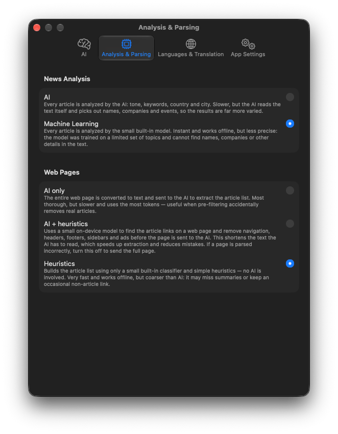

Handbook · AI and processing
Processing modes
What the AI, Machine Learning and Heuristics options do, and which to choose.
Every article is analysed after it is fetched, and Website sources need their page read. Both can be done by your AI or by models built into the app. Choose in Settings → Analysis & Parsing.

News Analysis
Gives each article its tone (sentiment), topic tags, people and organizations, country and city. This feeds the filters, story folders, the Fear Meter and the map.
| Machine Learning default | A model built into the app, running on your Mac. Offline, free and fast enough for thousands of articles. Recommended for most people. |
|---|---|
| AI | Each article is sent to your Criteria & Tags AI. Richer and better with context, but one AI request per article, which is slow on a local model or costly on a paid one. |
If no analysis AI is selected, AI quietly falls back to Machine Learning.
Web Pages
Only for sources added as Website: how the news links are picked out of the page.
| Heuristics default | No AI. An on-device model recognises news links by their look and place on the page. Offline and instant, a little coarser. |
|---|---|
| AI + heuristics | The on-device model first strips menus, footers and ads, then the AI picks the news from what is left. Fewer tokens than AI only. |
| AI only | The whole page goes to the AI. Most thorough, most expensive. |
Without an analysis AI, both AI modes fall back to Heuristics.
Reading the article's own page
When a feed carries only a headline, Summaries and Chat may open the article page itself to read the text. The app honours publishers' opt-outs for AI input and skips paywalled pages.
Languages and translation
Settings → Languages & Translation:
- Interface Language and Summary Language (the language summaries are written in).
- Automatically translate news into a Target language. Off by default; you can always press Translate in an article.
- Translation model: Fast uses Apple's downloadable language packs; High quality uses the Apple Intelligence model, slower but with nothing to download. Everything is translated on your Mac.
- Manage Translation Languages… opens System Settings to download packs.